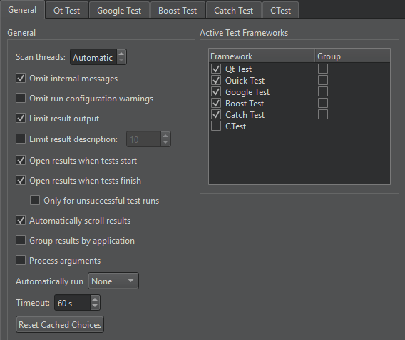
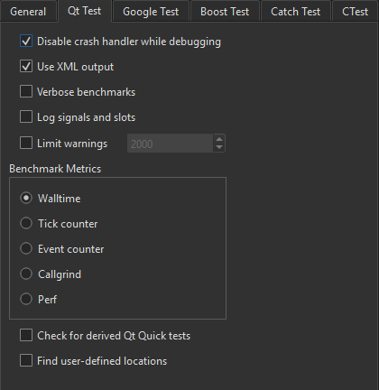
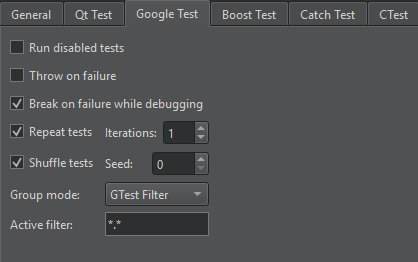
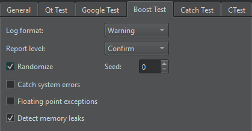
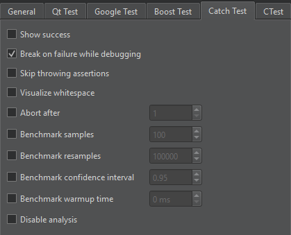
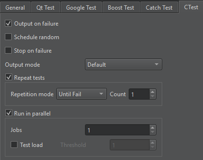

Testing
To set preferences for handling tests, go to Preferences > Testing > General.

The following table summarizes the general testing preferences.
| Setting | Value |
|---|---|
| Scan threads | Set the amount of worker threads used when scanning for tests. By default, Qt Creator uses a quarter of the available logical CPUs. |
| Omit internal messages | Omit internal messages. |
| Omit run configuration warnings | Omit run configuration warnings for deduced configurations. |
| Limit result output | By default, test result output shows a maximum of 100,000 characters. |
| Limit result description | Set the maximum number of lines in the test result tooltip and description. |
| Open results when tests start | Show test results automatically when testing starts. |
| Open results when tests finish | Show test results automatically when testing ends. |
| Open results only for unsuccesfull test runs | Show test results only if thy contain failed, fatal, or unexpectedly passed tests. |
| Automatically scroll results | The view automatically scrolls to show the latest results. |
| Group results by application | Group test results by the executable path that you use to run the tests. This is useful if you have multiple test executables and run them all at once. |
| Process arguments | Pass arguments to the test executable that you specify in the run configuration. This is an experimental feature that might cause the execution of the test executable to fail. |
| Automatically run | Automatically run all or selected tests after successfully building the current project. |
| Timeout | The maximum time in seconds to execute a test case. |
| Reset Cached Choices | Sometimes, Qt Creator cannot deduce which executable or run configuration to use. If it repeatedly asks you to select the tests to run when trying to execute tests, you can let it cache your choices and use them where appropriate. Qt Creator clears the cache when you switch to another project, close the current one, or select this setting. |
| Active Test Frameworks | Select tests for Qt Creator to handle. To improve the performance of full scans for tests, disable test frameworks you do not use. |
| Group | Group related test cases for an active test framework. By default, Qt Creator groups tests that are in the same directory. |
To select the testing framework for the current project, go to Projects > Project Settings > Testing.
Qt Tests
To set preference for Qt tests, go to Preferences > Testing > Qt Test.

The code inside a benchmark test is measured, and possibly also repeated several times in order to get an accurate measurement. This depends on the measurement back-end that you select in Benchmark Metrics:
- Walltime
- CPU tick counter
- Event counter
- Valgrind Callgrind
- Linux Perf
For more information, see Creating a Benchmark.
The following table summarizes the other Qt test preferences.
| Setting | Value |
|---|---|
| Disable crash handler while debugging | Allow the debugger to interrupt Qt tests on assertions. |
| Use XML output | XML output avoids parsing issues, but plain text is more human readable. Note: Plain text misses some information, such as duration. |
| Verbose benchmarks | Receive verbose output when running benchmarks. |
| Log signals and slots | Record information about signals and slots in the test log. |
| Limit warnings | Explicitly limit the maximum number of warnings in the test log. Set the limit to 0 if you want no limit at all. The default limit is 2000. |
| Check for derived Qt Quick tests | Check for Qt Quick Tests that are derived from TestCase. Note: This feature is rather expensive and increases the scan time significantly. |
| Find user-defined locations | Parse messages for the following pattern and use it as location information: file://filepath:linewhere ":line" is optional. Note: If the patterns are used in code, the location information for debug messages and other messages might improve, at the risk of some incorrect locations and lower performance. |
Google Tests
To specify settings for running Google tests, go to Preferences > Testing > Google Test.

The following table summarizes the Google test preferences.
| Setting | Value |
|---|---|
| Run disabled tests | Execute disabled tests during a test run. |
| Throw on failure | Turn assertion failures into C++ exceptions. |
| Break on failure while debugging | Turn failures into debugger breakpoints. |
| Repeat tests | Run several iterations of the tests. |
| Iterations | The number of times to run the tests. |
| Shuffle tests | Make sure that the tests are independent and repeatable by running them in a different order each time. |
| Seed | The seed for initializing the randomizer. The value 0 generates a seed based on the current timestamp. |
| Group mode | Group Google tests by using a GTest Filter. |
| Active filter | The GTest filter to use. |
For more information about GTest filters, see Running a Subset of the Tests.
Boost Tests
To specify settings for running Boost tests, go to Preferences > Testing > Boost Test.

The following table summarizes the Boost test preferences.
| Setting | Value |
|---|---|
| Log format | The type of events to record in the test report. |
| Report level | The verbosity level of the test result report. Select No if you do not want a report. |
| Randomize | Execute the tests in a random order. |
| Seed | The seed for initializing the randomizer. The value 0 means no randomization, the value 1 uses the current time, and any other value generates a random seed. |
| Catch system errors | Catch or ignore system errors. |
| Floating point exceptions | Detect floating point exception traps. |
| Detect memory leaks | Detect memory leaks. |
Catch2 Tests
To specify settings for running Catch2 tests, go to Preferences > Testing > Catch Test.

The following table summarizes the Catch2 test preferences.
| Setting | Value |
|---|---|
| Show success | Show succeeding expressions as well. By default Catch2 prints only failed expressions. |
| Break on failure while debugging | Turn failures into debugger breakpoints. |
| Skip throwing assertions | Skip assertions that test for thrown exceptions. |
| Visualize whitespace | Turn whitespace into escape sequences. |
| Abort after | Abort the test after the number of failures specified inside the box. |
| Benchmark samples | The number of samples to collect while running benchmarks. |
| Benchmark resamples | The number of resamples to use for statistical bootstrapping after benchmarking. |
| Benchmark confidence interval | The confidence interval for statistical bootstrapping. |
| Benchmark warmup time | The warmup time for each test before benchmarking starts. |
| Disable analysis | Disable statistical analysis and bootstrapping. |
Specifying Settings for Running CTest-Based Tests
To specify settings for running CTest-based tests, go to Preferences > Testing > CTest.

The following table summarizes the CTest preferences.
| Setting | Value |
|---|---|
| Output on failure | Show test specific output if a test fails. Contrary to the CTest default this setting is on by default. |
| Schedule random | Execute the tests in random order. |
| Stop on failure | Automatically stop the test execution on the first failing test. |
| Output mode, | The verbosity level of the CTest output. Note: This setting only influences the output on the text display. |
| Repeat tests | Re-run tests, as determined by Repetition mode. Set the maximum number of times for repeating a test in Count. |
| Run in parallel | Run the tests in parallel using the specified number of Jobs. In Test load, limit the parallel execution. CTest will not start a new test if it would cause the CPU load to pass the threshold set in Threshold. |
See also How To: Test and Test Results.